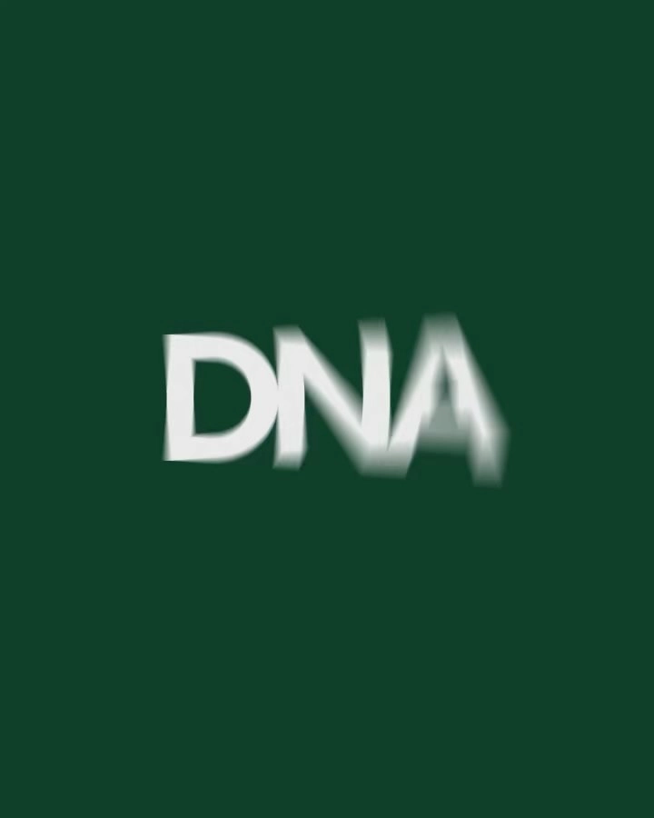

Архитектурный бэкграунд, дизайн как система и дисциплина мышления

Как ты определяешь «культуру дизайна» для себя? Что в это понятие входит – принципы, ценности, ритуалы внутри команды, подход к принятию решений, ответственность или что-то иное? В общем так, про идеологию получается.
Честно признаюсь, что никогда не задавался этим вопросом, поэтому мне было весьма интересно поразмышлять на эту тему.
Для меня культура дизайна – это в первую очередь про мышление, а не про визуал. Про то, как ты работаешь с задачей, как обсуждаешь решения, как относишься к критике и насколько готов пересобирать свою работу ради более точного результата.
Если говорить про принципы, то основной для меня – это дизайн со смыслом. Важно, чтобы он был понятным, информативным и точно передавал идею / концепцию бренда, а не сводился просто к красивой картинке, собранной из текущих трендов.
Отсюда вытекает и другой принцип – это стремление к дизайну вне времени. Мне важно делать решения, которые не зависят от краткосрочных тенденций и сохраняют актуальность за счёт ясной идеи и выстроенной визуальной системы.
Также для меня принципиальна честность в дизайне: когда визуальный язык не маскирует слабую концепцию, а усиливает сильную. И в целом важно уважение к содержанию и к пользователю – дизайн не должен усложнять или вводить в заблуждение.
В итоге культура дизайна для меня – это не только про форму, а про дисциплину мышления и умение делать сложное понятным, не теряя при этом связь с изначально заложенным смыслом.


Что скрывается за архитектурным бэкграундом – расскажи про свой путь и как он влияет на работу сейчас?
Моя любовь к графическому дизайну началась в 2007 году, когда я учился на первом курсе архитектурного института (МАрхИ). На одном из занятий по архитектурной композиции я поймал себя на мысли, что мне особенно интересно работать со шрифтом – создавать шрифтовые композиции, искать визуальные рифмы, переосмыслять форму и через это добиваться выразительности.
С этого момента я начал глубже погружаться в графический дизайн: разбирать и анализировать кейсы, копировать приёмы, пытаться понять, почему те или иные решения работают в конкретных задачах. Мне было важно не просто смотреть, а понимать логику визуальных решений.
К концу обучения в МАрхИ у меня сформировалась не только архитектурная, но и дизайн-насмотренность. И, наверное, этот симбиоз во многом определил мой текущий стиль и подход к дизайну. Я часто в своих работах опираюсь на архитектурные принципы: структуру, ритм, симметрию, работу с пространством. В целом я воспринимаю дизайн скорее как систему, чем как набор визуальных эффектов.


Какие практики и ориентиры в работе остаются неизменными? Что помогает и вдохновляет вне проектов?
Из практик остаётся неизменным исследовательский подход: сначала понять контекст, задачу и логику, а уже потом переходить к форме. Мне важно работать последовательно – от общего к частному, от структуры к деталям.
Вне проектов вдохновляет почти всё, что со мной происходит, и все процессы, которые меня окружают. Но если выделить что-то одно, то это безусловно путешествия. Визуальный опыт, который я получаю в поездках, сложно с чем-либо сравнить. Мне нравится погружаться в разные города, впитывать их архитектуру, структуру, изучать типографику, оформление вывесок, утилитарный дизайн и вообще то, как устроена визуальная среда. Для меня это один из самых сильных источников вдохновения.


Про ЛАШ: что для тебя в этом проекте главное и почему возвращаешься к нему?
Для меня в проекте ЛАШ главное – это взаимодействие с командой, у которой очень сильная смысловая и концептуальная база. Это именно тот случай, когда важно принимать визуальные решения, которые будут действительно соответствовать уровню заложенных идей.
Честно говоря, не всегда их размышления сразу для меня прозрачны, но в этом и заключается особый интерес – разбираться, вникать и искать точный визуальный образ этим смыслам. Каждый раз это становится своего рода профессиональным вызовом: перевести сложное содержание в ясный, точный и доступный визуальный язык.
Именно в этом я вижу главную ценность проекта для себя, и именно поэтому к нему хочется возвращаться снова и снова.
.webp)
.webp)
.webp)
Есть ли проекты, где твои ценности и дизайн-решения совпали особенно плотно? Расскажи про любимый последний кейс.
Мне нравится, как сложилась айдентика летней архитектурной школы. Проект довольно стихийный, требовал быстрых решений, своего рода экспресс-дизайн, но от этого он не становится менее ценным – наоборот, обретает для меня ещё большую ценность.
Небольшая предыстория о том, как со временем трансформировалась айдентика школы. Каждый год в ЛАШ новая тема для исследования. В 2024 году это было «Движение в архитектуре». Работая в тот год над визуальной частью, мы прощупывали разные решения, шрифты, принципы вёрстки и в итоге разработали графический знак – монограмму ЛАШ – и пришли к моноширинному шрифту, который, на наш взгляд, хорошо пересекается с историческим контекстом и архитектурой в целом – за счёт своей стройности и чёткости расположения глифов относительно друг друга.
.webp)
.webp)
.webp)
.webp)
В 2025 году тема – «Цвет в архитектуре», и итогом работы стали основные элементы фирменного стиля: логотип, шрифт и принципы вёрстки в макетах. Они будут сохраняться и оставаться неизменными дальше. А вот визуальные образы, приёмы, палитра и дополнительные стилеобразующие композиционные элементы, по нашему решению, будут трансформироваться в зависимости от текущей темы исследования школы.
.webp)
.webp)
.webp)
.webp)
В этом году тема – «Время в архитектуре», и передо мной стояла задача найти визуальный образ, который точно передаст ощущение времени в архитектуре. Результатом работы стала визуальная концепция, состоящая из двух стилистических решений: первое – фрагментарно исчезающая типографика как образ времени, ускользающего от нас; второе – размытая геометрическая фигура как образ растворяющегося объекта / здания на фоне типографики, отсылка к воспоминаниям, которые со временем размываются и теряют резкость. В итоге комбинация этих двух приёмов создаёт ощущение глубины пространства и одновременно нового и старого слоя времени.
.webp)
.webp)
.webp)
.webp)
Крафт и технологии (AI) – как у тебя складываются отношения с новыми инструментами, встроились ли они в рутину?
Крафт для меня остаётся основой работы. Мне по-прежнему важно самостоятельно проходить весь путь: от идеи и структуры до типографики, композиции и финального результата. Именно в этом процессе появляется точность и ощущение авторства.
К новым инструментам я отношусь спокойно и с интересом. AI для меня – это не замена дизайнерского мышления, а дополнительный слой, который помогает ускорять поиск, пробовать разные направления, делать тесты и быстрее приходить к рабочим вариантам.
Со временем эти инструменты довольно естественно встроились в рутину. Я использую их там, где они действительно помогают – в исследовании, генерации промежуточных идей, визуальных экспериментах или подготовке вариаций.
Но ключевые решения всё равно остаются за мной. Для меня важно, чтобы технология не подменяла вкус, насмотренность и чувство меры. Поэтому AI – это полезный инструмент, но не самостоятельная ценность. Самое интересное для меня по-прежнему происходит в момент, когда технология соединяется с ручным отбором, вниманием к деталям и дизайнерской логикой.